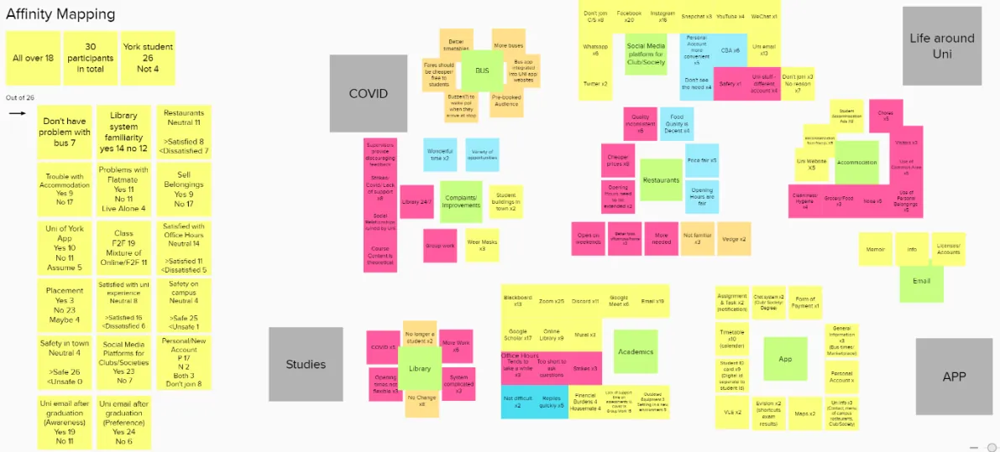
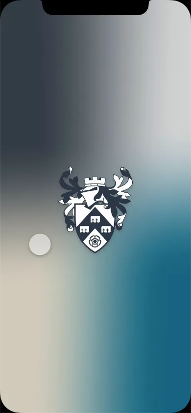
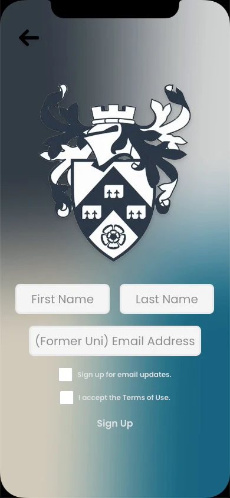
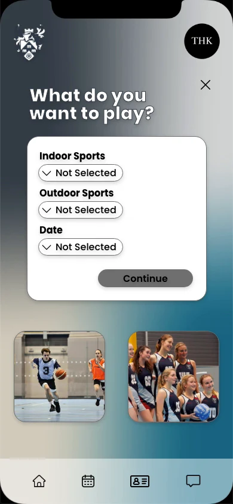
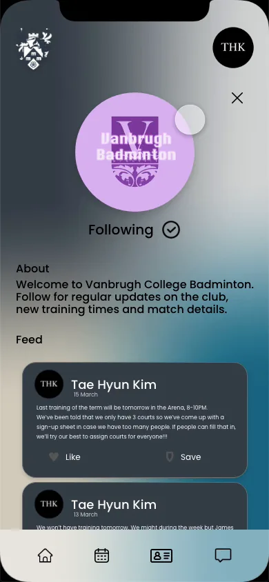
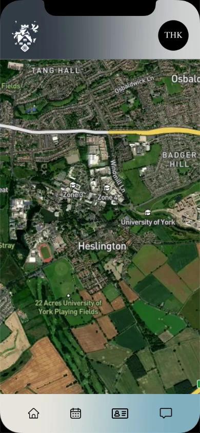
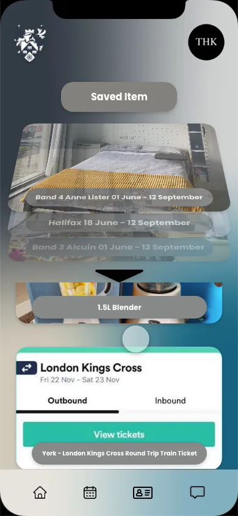

PROJECT 02
UoY App
흩어진 학교 서비스를 구성원 전용 앱 하나로
문제학생 앱은 있었지만, 학생이 쓰는 앱은 아니었습니다
Guardian 2022 순위 상위 20개 대학의 학생 앱을 조사했습니다. 6곳은 통합 학생 앱이 없었고, 앱 평점을 확인할 수 있는 13곳의 App Store 평균은 3.3점이었습니다. 리뷰를 유형별로 나눠 보니 불만은 기능보다 기본 품질에 몰려 있었습니다.
동아리 소식이나 집 구하기 같은 정보는 공식 채널이 아니라 페이스북 그룹에 흩어져 있었습니다. 어느 그룹이 진짜인지 알기 어렵고, 학생들은 정보를 얻기 위해 개인정보를 내줘야 했습니다.
리서치앱 경험이 아니라 학교생활 전체를 물었습니다
기존 앱이 학생의 기대를 못 맞췄다는 분석에서 출발해, 앱 사용 경험 대신 학교생활 전반을 묻는 설문을 30명(York 재학·졸업생 26명)에게 보냈습니다. 도시 생활, 학업, 학교생활, 앱 기대 기능의 네 영역으로 나눴습니다.
- York 응답자 26명 중 18명이 버스 이용에 문제가 있다고 답했고, 가장 큰 이유는 부정확한 시간표(16명)였습니다.
- 12명은 새로 바뀐 도서관 예약 시스템을 잘 모른다고 답했습니다.
- 11명은 York 공식 앱이 이미 있다는 사실을 몰랐습니다.



설계 원칙밖으로 내보내지 않고, 구성원만 들어오게
- 학생이 실제로 쓰는 기능 먼저: 시간표·캘린더, 교내 식당, 학생증, 도서관 좌석 예약
- 외부 웹페이지로 넘기지 않고 앱 화면 안에서 해결
- 동아리와 행사를 서드파티 없이 공식 채널에서 운영
- York 구성원만 들어오는 로그인. 졸업생은 예전 학교 이메일로 인증
- 학교 공식 브랜드 컬러 4색 그라데이션, 상·하단 내비게이션을 모든 화면에 고정






사용성 테스트세 명 모두 쓰겠다고 했지만, 아이콘은 읽히지 않았습니다
설문 응답자 중 3명에게 정보제공서와 동의서를 받고, 정해 둔 스크립트에 따라 과제를 주며 생각을 말하게 했습니다.
| 참가자 | 점수 | 주요 의견 |
|---|---|---|
| P1 | 9 / 10 | 처음 쓰는 사람에게는 하단 아이콘이 어디로 가는지 분명하지 않다. 아이콘 아래에 이름을 달자고 제안. 학습 시스템(VLE)이 앱 안에 들어오길 원함 |
| P2 | 8 / 10 | 그라데이션은 개인적으로 좋아하지 않지만, 학교 공식 4색이라는 설명에는 납득. 디지털 학생증과 이중 인증 없이 들어가는 학사 시스템(Evision)이 편리 |
| P3 | 9.5 / 10 | 가독성이 높고 각 섹션의 정보가 찾기 쉽다. 재학 중에 이런 앱이 있었다면 좋았을 것 |
최종 프로토타입에는 첫 화면에서 메뉴·위젯·하단 탭의 이름을 알려 주는 안내 화면을 넣었습니다.
결과물리서치에서 찾은 문제마다 화면으로 답했습니다
Balsamiq 저해상도 시안을 거쳐 Adobe XD로 인터랙티브 프로토타입을 완성했습니다. 앞 단계에서 찾은 문제마다 그에 답하는 화면이 하나씩 있도록 구성했습니다.
| 리서치에서 찾은 문제 | 프로토타입에서 푼 방식 |
|---|---|
| 앱 리뷰 13건: 앱 안에서 해결되지 않고 외부 웹페이지로 넘어감 | 도서관 좌석 예약, 교내 식당 메뉴, 스포츠 시설 예약, 학사 시스템(Evision)을 모두 앱 화면 안에 넣음 |
| 동아리·집 구하기 정보가 페이스북 그룹에 흩어져 있고, 정보를 얻으려면 개인정보를 내줘야 함 | York 구성원만 들어오는 로그인 뒤에 동아리·행사·중고장터를 공식 채널로 운영. 졸업생은 예전 학교 이메일로 인증 |
| 응답자 12명이 새 도서관 예약 시스템을 잘 모름 | QR 입장과 좌석 예약을 도서관 화면 하나로 묶음 |
| 테스트 P1: 처음 쓰는 사람에게 하단 아이콘이 어디로 가는지 불분명 | 첫 실행 때 메뉴·위젯·하단 탭 이름을 알려 주는 안내 화면 추가 |
모든 화면에 학교 공식 4색 그라데이션과 같은 위치의 상·하단 탭을 적용해, 어느 기능에 있어도 같은 방식으로 이동하게 했습니다. 테스트 참가자 3명은 모두 실제로 출시되면 이 앱을 쓰겠다고 답했고, 평균 점수는 10점 만점에 8.8점이었습니다.